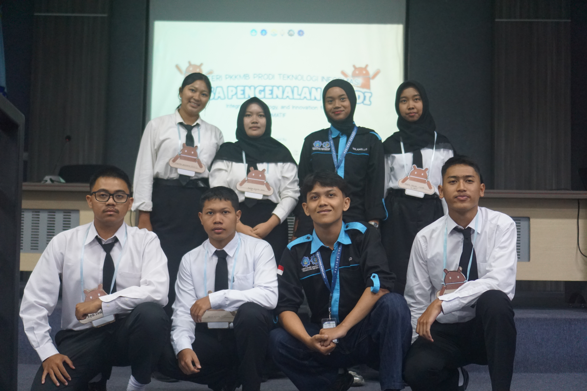

Day 1 MPP
Dokumentasi Day 1 MPP
Dokumentasi kegiatan hari pertama MPP (Masa Pengenalan Profram Studi) D3 Teknologi Informasi Madiun, termasuk perkenalan anggota kelompok RUST dan pembagian tugas awal.
Kumpulan Dokumentasi Kelompok Kami.
Dokumentasi kegiatan hari pertama MPP (Masa Pengenalan Profram Studi) D3 Teknologi Informasi Madiun, termasuk perkenalan anggota kelompok RUST dan pembagian tugas awal.

Dokumentasi kegiatan hari kedua MPP (Masa Pengenalan Profram Studi) D3 Teknologi Informasi Madiun, termasuk perkenalan anggota kelompok RUST dan pembagian tugas awal.

Dokumentasi kegiatan hari pertama MPP (Masa Pengenalan Profram Studi) D3 Teknologi Informasi Madiun, termasuk perkenalan anggota kelompok RUST dan pembagian tugas awal.
Klik nama anggota untuk melihat 6 sertifikat Dicoding miliknya. Klik "Lihat Detail" pada tiap sertifikat untuk melihat versi lebih besar dan keterangannya.